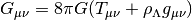

Demo Docs¶
| Page Status: | Incomplete |
|---|---|
| Last Reviewed: | 2013-10-29 |
Contents:
Sweet Docs¶
Giant tables¶
| Header 1 | Header 2 | Header 3 | Header 1 | Header 2 | Header 3 | Header 1 | Header 2 | Header 3 | Header 1 | Header 2 | Header 3 |
|---|---|---|---|---|---|---|---|---|---|---|---|
| body row 1 | column 2 | column 3 | body row 1 | column 2 | column 3 | body row 1 | column 2 | column 3 | body row 1 | column 2 | column 3 |
| body row 1 | column 2 | column 3 | body row 1 | column 2 | column 3 | body row 1 | column 2 | column 3 | body row 1 | column 2 | column 3 |
| body row 1 | column 2 | column 3 | body row 1 | column 2 | column 3 | body row 1 | column 2 | column 3 | body row 1 | column 2 | column 3 |
| body row 1 | column 2 | column 3 | body row 1 | column 2 | column 3 | body row 1 | column 2 | column 3 | body row 1 | column 2 | column 3 |
Optional parameter args¶
At this point optional parameters cannot be generated from code. However, some projects will manually do it, like so:
This example comes from django-payments module docs.
-
class
payments.dotpay.DotpayProvider(seller_id, pin[, channel=0[, lock=False], lang='pl'])¶ This backend implements payments using a popular Polish gateway, Dotpay.pl.
Due to API limitations there is no support for transferring purchased items.
Parameters: - seller_id – Seller ID assigned by Dotpay
- pin – PIN assigned by Dotpay
- channel – Default payment channel (consult reference guide)
- lang – UI language
- lock – Whether to disable channels other than the default selected above
Code test¶
# parsed-literal test curl -O http://someurl/release-0.1-Beta.tar-gz
{
"windows": [
{
"panes": [
{
"shell_command": [
"echo 'did you know'",
"echo 'you can inline'"
]
},
{
"shell_command": "echo 'single commands'"
},
"echo 'for panes'"
],
"window_name": "long form"
}
],
"session_name": "shorthands"
}
Sidebar¶

Above CH’IEN THE CREATIVE, HEAVEN
Below CH’IEN THE CREATIVE, HEAVEN
The first hexagram is made up of six unbroken lines. These unbroken lines stand for the primal power, which is light-giving, active, strong, and of the spirit. The hexagram is consistently strong in character, and since it is without weakness, its essence is power or energy. Its image is heaven. Its energy is represented as unrestricted by any fixed conditions in space and is therefore conceived of as motion. Time is regarded as the basis of this motion. Thus the hexagram includes also the power of time and the power of persisting in time, that is, duration.
The power represented by the hexagram is to be interpreted in a dual sense in terms of its action on the universe and of its action on the world of men. In relation to the universe, the hexagram expresses the strong, creative action of the Deity. In relation to the human world, it denotes the creative action of the holy man or sage, of the ruler or leader of men, who through his power awakens and develops their higher nature.
Code with Sidebar¶
Boxes¶
Tip
Equations within a note .
Note
Equations within a note .
Danger
Equations within a note .
Warning
Equations within a note .
Inline code and references¶
reStructuredText is a markup language. It can use roles and declarations to turn reST into HTML.
In reST, *hello world* becomes <em>hello world</em>. This is
because a library called Docutils was able to parse the reST and use a
Writer to output it that way.
If I type ``an inline literal`` it will wrap it in <tt>. You can
see more details on the Inline Markup on the Docutils homepage.
Also with sphinx.ext.autodoc, which I use in the demo, I can link to
test_py_module.test.Foo. It will link you right my code
documentation for it.
Note
- Every other line in this table will have white text on a white background.
- This is bad.
| Example |
|---|
| Thing1 |
| Thing2 |
| Thing3 |
Emphasized lines with line numbers¶
1 2 3 4 5 | def some_function():
interesting = False
print 'This line is highlighted.'
print 'This one is not...'
print '...but this one is.'
|
Citation¶
Here I am making a citation [1], another [2] and another [3]
| [1] | This is the citation I made, let’s make this extremely long so that we can tell that it doesn’t follow the normal responsive table stuff. |
| [2] | This citation has some code blocks in it, maybe some bold and
italics too. Heck, lets put a link to a meta citation [3] too. |
| [3] | (1, 2) This citation will have two backlinks. |